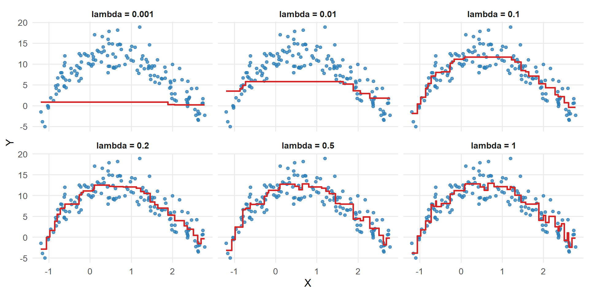
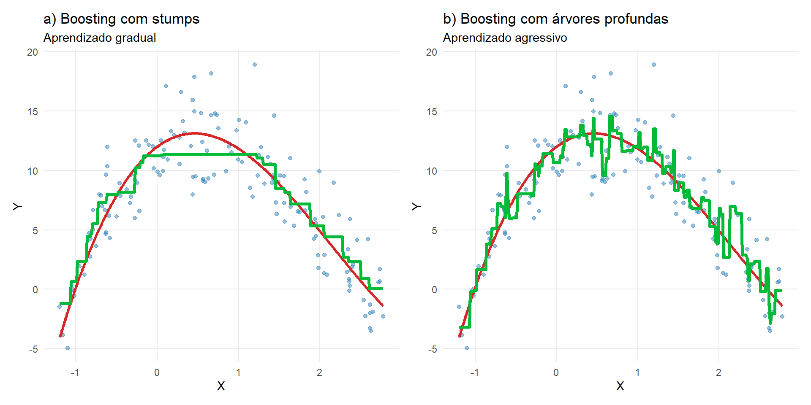
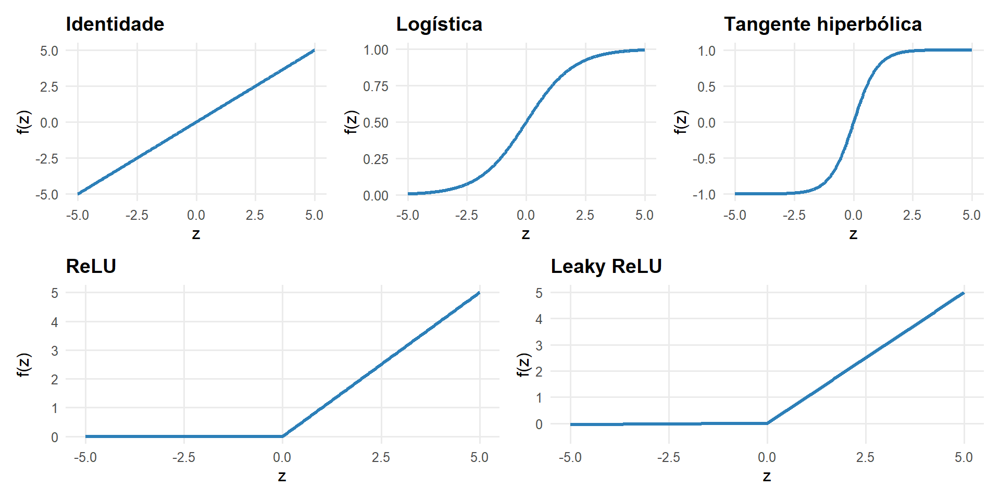

Parte I : Aprendizado Supervisionado
Boosting e Redes Neurais
Boosting
De Bagging para Boosting
Bagging: \[ \widehat g_{bag}(x)=\frac1B\sum_{b=1}^B\widehat g_b(x) \]
Os modelos são construídos essencialmente em paralelo.
Boosting: \[ F_0\rightarrow F_1\rightarrow\cdots\rightarrow F_M \]
Cada novo modelo procura corrigir o modelo atual.
Modelo aditivo
\[ \boxed{ F_M(x)=F_0(x)+\sum_{m=1}^{M}\lambda h_m(x) } \]
- \(h_m\): aprendiz fraco;
- \(\lambda\): learning rate;
- \(M\): número de iterações.
Começando pela perda quadrática
\[ L(y,F(x))=\frac12[y-F(x)]^2 \]
O modelo inicial constante resolve: \[ F_0=\arg\min_c\sum_i\frac12(y_i-c)^2, \] portanto: \[ \boxed{F_0(x)=\bar y} \]
Corrigindo o modelo atual
No passo \(m\): \[ r_{im}=y_i-F_{m-1}(x_i) \]
Ajustamos uma árvore \(h_m\) aos resíduos e atualizamos: \[ \boxed{ F_m(x)=F_{m-1}(x)+\lambda h_m(x) } \]
Por que resíduos?
Para: \[ L_i(F)=\frac12[y_i-F(x_i)]^2, \]
temos: \[ \frac{\partial L_i}{\partial F(x_i)}=F(x_i)-y_i \]
Gradient Boosting
Para uma perda diferenciável: \[ r_{im} = - \left[ \frac{\partial L(y_i,F(x_i))} {\partial F(x_i)} \right]_{F=F_{m-1}} \]
Ajustamos \(h_m\) aos pseudo-resíduos.
\[ \boxed{\text{Boosting = descida do gradiente no espaço de funções}} \]
Learning rate
\[ F_m=F_{m-1}+\lambda h_m \]
\[ \lambda\downarrow \Rightarrow \text{passos menores e aprendizado mais gradual} \]
Valores menores de \(\lambda\) normalmente exigem mais árvores.
Controles de complexidade
Os principais são: \[ \boxed{M,\quad \lambda,\quad \text{profundidade das árvores}} \]
Eles devem ser selecionados por validação.


Boosting e Estimadores Fracos
O boosting não é restrito ao uso de árvores.
Podemos usar qualquer modelo como base, desde que seja um estimador fraco.
O que é um estimador fraco?
- modelo simples
- baixo poder preditivo individual
- pequeno viés de ajuste
Exemplos: árvores rasas (stumps), regressão linear simples, modelos com poucos parâmetros
Por que usar modelos fracos?
- evitam overfitting em cada etapa
- permitem correções graduais
- tornam o aprendizado mais estável
Se você usar modelos muito complexos (ex: árvores profundas):
👉 boosting pode superajustar rapidamente

Bagging × RF × Boosting
| Método | Construção | Ideia central |
|---|---|---|
| Bagging | paralela + bootstrap | reduzir variância |
| Random Forest | paralela + bootstrap + aleatorização de variáveis | reduzir correlação |
| Boosting | sequencial | corrigir erros sucessivamente |
Boosting em classificação
O procedimento sequencial permanece; muda a função de perda adequada à classificação
Redes Neurais
Redes Neurais Artificiais
Redes neurais são modelos que aproximam funções não lineares complexas.
No contexto de regressão, trata-se de um estimador não linear de \(r(\mathbf{x})\) que pode ser representado graficamente por uma estrutura do tipo

Redes Neurais Artificiais
Para a rede apresentada,
Entrada
\[ \mathbf{x} = (x_1, x_2, x_3)^t \]
Camada oculta
Um dado neurônio \(j\) da camada oculta é calculado como
\[ x_j^{1} = f\left( \beta_{0,j}^{(0)} + \sum_{i=1}^{3} \beta_{i,j}^{(0)} x_i^{0} \right), \quad \text{com } x_i^{0} = x_i,\; i=1,2,3. \]
e \(f\) é uma função definida pelo usuário, chamada de função de ativação.
Redes Neurais Artificiais
Saída
Para regressão, utilizamos uma ativação linear na camada de saída:
\[ \boxed{ g_\beta(\mathbf{x}) = x_1^2 = \beta_{0,1}^{(1)} + \sum_{j=1}^{5} \beta_{j,1}^{(1)}x_j^1 } \]
Assim,
\[ \widehat y = g_\beta(\mathbf{x}) = x_1^2 \]
Nas camadas ocultas, a função de ativação introduz não linearidade.
Na saída de uma rede para regressão, usamos tipicamente ativação linear.
Representação de cada neurônio da rede

Funções de Ativação
Clássicas
Identidade \[ f(z)=z \]
Sigmoid \[ f(z)=\frac{1}{1+e^{-z}} \]
Tanh \[ f(z)=\frac{e^z-e^{-z}}{e^z+e^{-z}} \]
Modernas
ReLU \[ f(z)=\max(0,z) \]
Leaky ReLU \[ f(z)= \begin{cases} 0.01z, & z<0\\ z, & z\geq0 \end{cases} \]

Por que precisamos de funções de ativação?
Sem \(f(\cdot)\):
\[ g(\mathbf{x}) = \text{combinação linear} \]
Com \(f(\cdot)\):
\[ g(\mathbf{x}) = \text{função não linear} \]
A função de ativação é o que dá poder às redes neurais.
Treinamento
Todos os pesos e vieses da rede são reunidos em \(\beta\):
\[ \beta = \left\{ \beta_{i,j}^{(0)}, \beta_{j,1}^{(1)} \right\} \]
incluindo os termos de intercepto \(\beta_{0,j}^{(0)}\) e \(\beta_{0,1}^{(1)}\).
O objetivo do treinamento é encontrar:
\[ \widehat\beta = \arg\min_\beta \frac{1}{n} \sum_{r=1}^{n} L\left(y_r,g_\beta(\mathbf{x}_r)\right) \]
Gradiente descendente
Como não temos uma solução analítica, os parâmetros são atualizados iterativamente.
\[ \boxed{ \beta^{(t+1)} = \beta^{(t)} - \eta \nabla_\beta J\left(\beta^{(t)}\right) } \]
onde
\[ \nabla_\beta J(\beta) \]
contém as derivadas de \(J\) em relação a todos os pesos e vieses da rede.
\(\eta>0\) é a taxa de aprendizado.
O que precisamos calcular?
Para atualizar os parâmetros, precisamos de derivadas como
\[ \frac{\partial J}{\partial \beta_{i,j}^{(0)}} \qquad\text{e}\qquad \frac{\partial J}{\partial \beta_{j,1}^{(1)}} \]
Mas a saída da rede é uma composição de funções:
\[ \beta_{i,j}^{(0)} \longrightarrow x_j^1 \longrightarrow x_1^2 \longrightarrow L \]
É aqui que entra o backpropagation.
Backpropagation
Backpropagation calcula eficientemente os gradientes usando repetidamente a regra da cadeia.
Considere o peso \(\beta_{i,j}^{(0)}\), que conecta a entrada \(x_i^0\) ao neurônio \(x_j^1\) da camada oculta.
Gradiente na camada de saída
Como
\[ x_1^2 = \beta_{0,1}^{(1)} + \sum_{j=1}^{5} \beta_{j,1}^{(1)}x_j^1, \]
temos
\[ \frac{\partial x_1^2} {\partial\beta_{j,1}^{(1)}} = x_j^1 \]
Atualizando os pesos
Depois que o backpropagation calcula os gradientes, o otimizador atualiza os parâmetros.
Para a primeira camada:
\[ \boxed{ \beta_{i,j}^{(0)} \leftarrow \beta_{i,j}^{(0)} - \eta \frac{\partial J} {\partial\beta_{i,j}^{(0)}} } \]
Para a camada de saída:
\[ \boxed{ \beta_{j,1}^{(1)} \leftarrow \beta_{j,1}^{(1)} - \eta \frac{\partial J} {\partial\beta_{j,1}^{(1)}} } \]
Por que o nome Backpropagation?
Os gradientes são calculados da saída para a entrada

O erro “volta” pela rede ajustando os pesos
Regularização
Redes flexíveis também podem sobreajustar.
Uma possibilidade é penalizar os pesos:
\[ \boxed{ J_\lambda(\beta) = J(\beta) + \lambda \sum_{\ell} \sum_{i,j} \left(\beta_{i,j}^{(\ell)}\right)^2 } \]
Outros mecanismos comuns:
- early stopping;
- dropout;
- controle do número de camadas;
- controle do número de neurônios.
Parâmetros \(\times\) Hiperparâmetros
Parâmetros: aprendidos no treinamento
\[ \boxed{ \beta_{i,j}^{(\ell)} } \]
Pesos e vieses são estimados minimizando \(J(\beta)\).
Hiperparâmetros: definidos externamente
\[ H,\quad L,\quad \eta,\quad \lambda, \quad \text{batch size},\quad \text{épocas}. \]
Sua escolha deve ser baseada em validação, e não no erro de treinamento.
Rede neural aprendendo uma função não linear
Neste exemplo, a RNA foi ajustada para aproximar a função
\[ f(x)=12+4x-6x^2+x^3+\sin(x) \]
a partir de observações ruidosas.
A curva verde mostra a predição da rede, enquanto a curva vermelha representa a função real.
Síntese
- a função de ativação introduz não linearidade;
- a camada oculta cria novas representações dos dados;
- o backpropagation ajusta os pesos para reduzir o erro;
- com isso, a rede consegue aproximar funções complexas.
Integração
Diferentes fontes de flexibilidade
Splines: funções de base.
KNN/kernel/local: vizinhanças.
Árvores: partições.
Random Forest: média de árvores decorrelacionadas.
Boosting: correções sequenciais.
Redes neurais: composição de transformações não lineares.
Redes neurais para classificação
Saída binária
\[ \boxed{x_1^L=\sigma(z_1^L)} \] com \(x_1^L=\widehat P(Y=1\mid X=x)\)
Cross-entropy
\[ \boxed{L(y,\widehat p)=-[y\log(\widehat p)+(1-y)\log(1-\widehat p)]} \]
Multiclasse: Softmax
\[ \boxed{\widehat p_k(\mathbf x)=\frac{\exp(z_k^L)}{\sum_r\exp(z_r^L)}} \]
EST335 — Semana 9